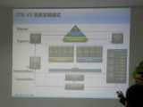
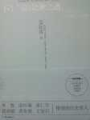
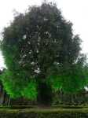
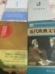
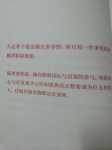
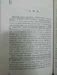
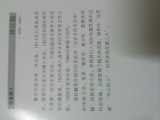

博客教主
今天 13:08 来自网页
昨天 19:28 来自网页
2月27日 19:27 来自网页
2月26日 22:56 来自网页
2月26日 17:20 来自网页
2月25日 21:55 来自网页1
2月26日 09:49 来自网页
2月24日 11:20 来自网页
2月22日 12:17 来自网页

2月22日 11:27 来自网页
2月17日 16:45 来自网页

2月14日 22:12 来自网页
2月14日 15:25 来自网页

2月10日 08:23 来自网页(1)
2月8日 22:19 来自网页
2月6日 13:06 来自网页
2月4日 22:29 来自网页

2月4日 18:18 来自网页

2月3日 23:20 来自网页

2月2日 22:21 来自网页

1月30日 22:09 来自网页
林丽丽
year光之翼_yxmm
daen